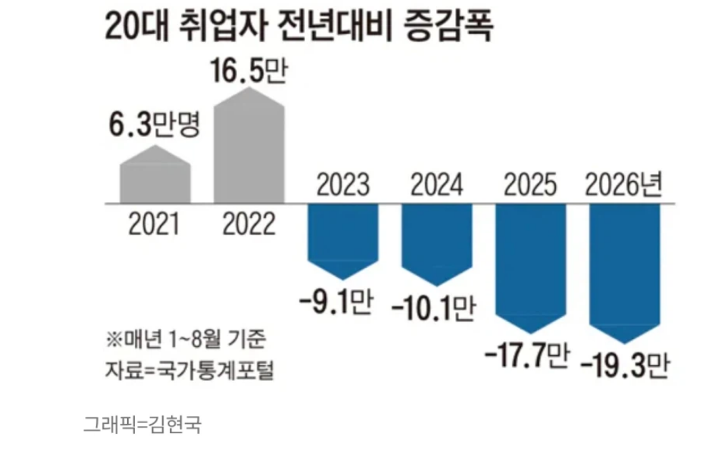

https://bbs.ruliweb.com/best/board/300143/read/76709456

https://www.chosun.com/economy/economy_general/2026/09/14/IOYDHKBW5NGCZMJVFYRUGPAPGQ/#google_vignette
https://bbs.ruliweb.com/best/board/300143/read/76709456

https://www.chosun.com/economy/economy_general/2026/09/14/IOYDHKBW5NGCZMJVFYRUGPAPGQ/#google_vignette
있는 사람도 어떻게든 자르려고 하는데
신입을 뽑겠나
한국 고용유연성은 최악이다
대책이 없다...
눈을 낮추자니 미래가 없고
눈을 높이자니 자리가 없네
능력이 없지
주변보면 공장, 사무직 할거 없이 지옥임.
공장은 걍 지금 내수가 바닥이라 힘들고
사무직은 ai 대체..
여기에 금리 올리는타이밍이라 긴축타이밍...
일자리가 적어질일밖에없지.
몇년 손가락 빨기 싫으면 빨리 뭐든 취업해야함
기업가들은요 사람보다 원숭이가 일을 더 잘하면 원숭이를 뽑아요!(원책횽의 명언) 이제 그 원숭이가 AI가 되어서 침공한다! 미래에는 여성우대정책같이 인간우대정책 나온다. 내 말은 예언이 됨. ㅋㅋㅋ
원숭이 우대정책은 안나오나요?
국방쪽은 나라가 없어지지않는한 무조건 뽑는다
군인 군무원
국방부 쪽은 필기 커트 올라가고 있으니까 2027년 안에 꼭 들어오셈
본인은 9/30날 면접 결과 나와서 기다리는중
내년 육통 준비중임 사자산기 이번에 땃다
육통까지는 아직 괜찮은거 같음
화이팅입니다
화이팅해보자고!!!
대학진학률이 높다보니 바라보는 잣대도 당연히 높아서 그럴수도 있는데
일자리도 확실히 많이 없긴해
우리도 신입공채 안받은지 오래고 대부분은 경력직이거나 인맥으로 옴
아무리 지방쪽 공장 중소기업 자리 널널하다지만 요즘 시대에 8,90년대 처럼 박봉에 고노동을 하고 싶은 사람도 없을꺼고
그자리는 자연스럽게 외노자로 채워지고 악순환이지
감히 우리 영포티를 무시했겠다!?
처절한 응징이다!
AI 성능 향상 속도가 엄청남... 개월 단위로 바뀌고 있음.
특히 요즘 에이전트 구성하면 편하기야 한데, 내 사용 가치가 거의 없어보임.
인간의 가치는 사회성과 이야기꾼으로서의 능력 같음. 찐따들은 점점 설 자리가 더 없어지는거임.
어쩌면 저출산은 신의 한수?
제발 영포티들 imf 타령 좀 그만하면 안됨? 지금이 그 시기보다 구인배수도 낮고 자살율도 훨씬 높은데 지금에 비하면 ㅈ도 아닌 imf로 유난떠는거 보면 진짜 할배들이 나때 얘기 무한반복 하는거 같아서 모자라보임
미래를 조지는 건 항상 기득권이었다
이런 상황에서 자살은 사회적 자정작용
나라에서도 암묵적으로 미는중
공공 목적의 일자리는 계속 있음
공무원(일반직(국가,지방), 소방, 군인, 경찰), 공공기관
많관부
외노자들 일자리 다시 뺏어 와야지
하기 싫다고? 비빌 언덕 없는 애들은 그거라도 해야지 안하면 뭘 할 수 있는데
러다이트 ㄱㄱ
40살까지 백수인 개붕이들한테 취업이 어쩌구 해봐야 체감도안되고 그냥 20대애들 눈이높아서 그런거지 ㅉㅉ 하고 넘김
개드립에 맞지않는 주제다